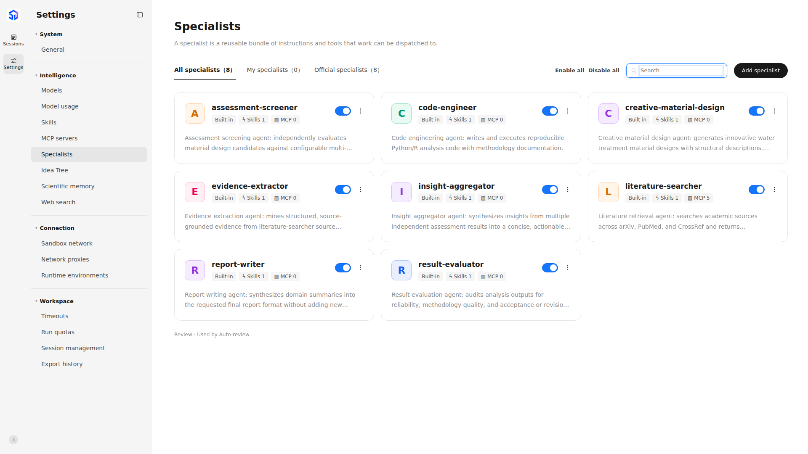
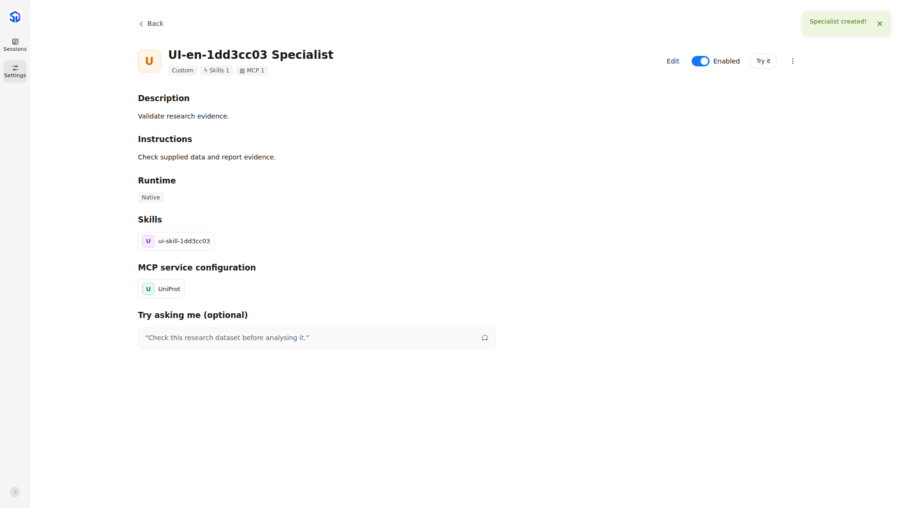
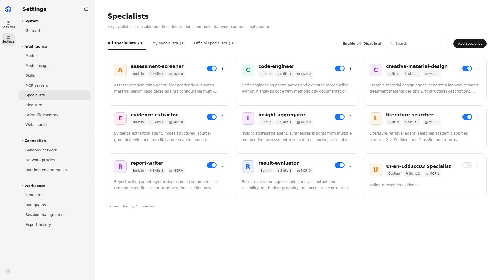
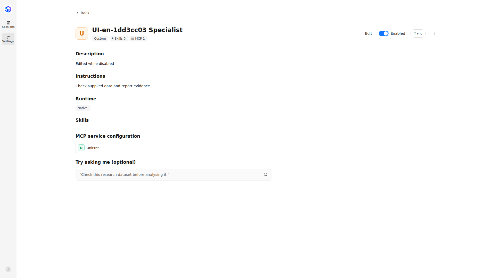
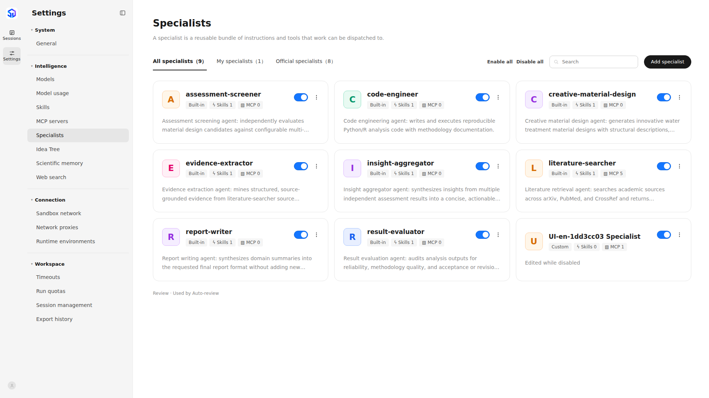
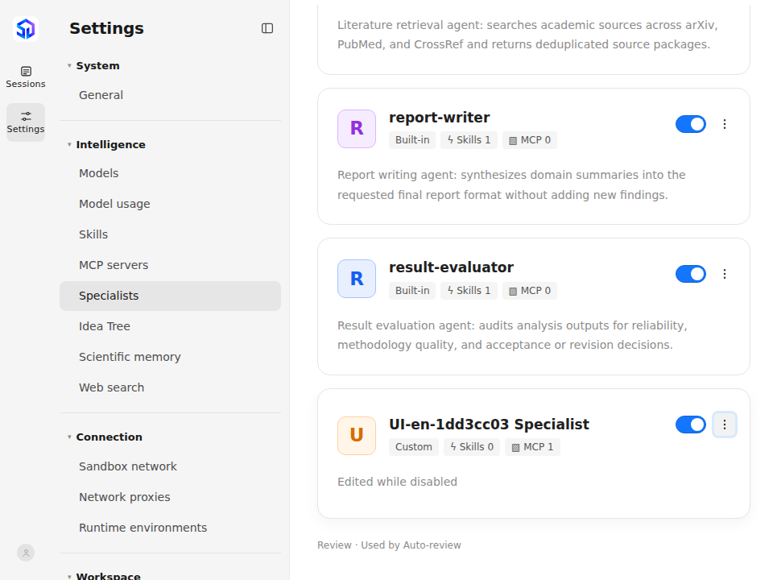
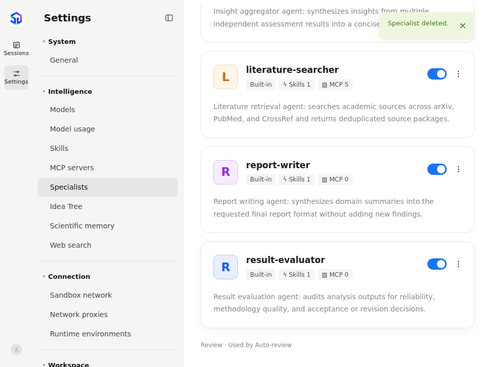

PASS
| 结果 | PASS |
|---|---|
| 被测 SHA | 8e648e8f80221641e43504e571a73dc1641c8104 |
| 规格文件 | test/journey-desktop-specialist-toggle.spec.ts |
| 用例 | en: manage Specialist cards and trial drafts |
| 分组 | mocked (@isolation:global @fixture:standard @category:e2e @os:linux @arch:amd64 @model:mock @status:reviewed @mocked) |
| 开始 | 2026-11-26T09:00:36.329Z |
| 结束 | 2026-11-26T09:01:35.252Z |
| 耗时 | 58.9s |
| 步骤 | 8 / 8 通过 |
Create, configure, inspect and safely try a custom Specialist without executing a model.
| # | 用户步骤 | 用户应看到 | 结果 | 耗时 |
|---|---|---|---|---|
| 1 | 1. Inspect catalog controls | Source tabs, search and the primary create action are available. | ✅ 通过 | 8.0s |
| 2 | 2. Create with capability drawers and examples | Only confirmed drawer selections are saved; prompt examples stay separate from instructions. | ✅ 通过 | 4.4s |
| 3 | 3. Preserve and explicitly clear a disabled current binding | The bound name, state, full narrow hint and inactive selected option remain truthful. | ✅ 通过 | 17.3s |
| 4 | 4. Recover a toggle failure and exercise bulk actions | A failed write stays off, retry succeeds, and fixed Reviewer has no switch. | ✅ 通过 | 5.0s |
| 5 | 5. Toggle and repair after removing a selected skill | A stale skill does not prevent disabling; explicit removal preserves the remaining MCP selection. | ✅ 通过 | 9.6s |
| 6 | 6. Try an example without starting a Run | A new inbox Session binds the role and only prefills the editable composer. | ✅ 通过 | 8.8s |
| 7 | 7. Inspect builtins and narrow actions | Built-ins have read-only details; custom actions stay reachable at 960px. | ✅ 通过 | 1.5s |
| 8 | 8. Cancel then pointer-confirm deletion | Cancel preserves the role; confirmation removes it from the real API. | ✅ 通过 | 2.4s |
用户应看到：Source tabs, search and the primary create action are available.
耗时 8.0s

network: GET https://api.github.com/repos/openJiuwen-ai/sciencediscovery failed: net::ERR_BLOCKED_BY_CLIENT.Inspector console: [error] Failed to load resource: net::ERR_BLOCKED_BY_CLIENT.Inspector @ https://api.github.com/repos/openJiuwen-ai/sciencediscovery
用户应看到：Only confirmed drawer selections are saved; prompt examples stay separate from instructions.
耗时 4.4s

无 console 错误/警告，无失败请求。
用户应看到：The bound name, state, full narrow hint and inactive selected option remain truthful.
耗时 17.3s

network: GET http://127.0.0.1:4178/api/models failed: net::ERR_ABORTED network: POST http://127.0.0.1:4178/api/inbox failed: net::ERR_ABORTED network: GET http://127.0.0.1:4178/api/health failed: net::ERR_ABORTED network: GET http://127.0.0.1:4178/api/settings failed: net::ERR_ABORTED network: GET https://api.github.com/repos/openJiuwen-ai/sciencediscovery failed: net::ERR_ABORTED network: GET http://127.0.0.1:4178/api/skills failed: net::ERR_ABORTED network: GET http://127.0.0.1:4178/api/providers failed: net::ERR_ABORTED network: GET http://127.0.0.1:4178/api/specialists failed: net::ERR_ABORTED network: GET https://api.github.com/repos/openJiuwen-ai/sciencediscovery failed: net::ERR_BLOCKED_BY_CLIENT.Inspector console: [error] Failed to load resource: net::ERR_BLOCKED_BY_CLIENT.Inspector @ https://api.github.com/repos/openJiuwen-ai/sciencediscovery
用户应看到：A failed write stays off, retry succeeds, and fixed Reviewer has no switch.
耗时 5.0s
network: PUT http://127.0.0.1:4178/api/specialists/bde5475c-0712-448c-bc33-01b3f4989965 failed: net::ERR_FAILED console: [error] Failed to load resource: net::ERR_FAILED @ http://127.0.0.1:4178/api/specialists/bde5475c-0712-448c-bc33-01b3f4989965
用户应看到：A stale skill does not prevent disabling; explicit removal preserves the remaining MCP selection.
耗时 9.6s

network: GET https://api.github.com/repos/openJiuwen-ai/sciencediscovery failed: net::ERR_BLOCKED_BY_CLIENT.Inspector console: [error] Failed to load resource: net::ERR_BLOCKED_BY_CLIENT.Inspector @ https://api.github.com/repos/openJiuwen-ai/sciencediscovery
用户应看到：A new inbox Session binds the role and only prefills the editable composer.
耗时 8.8s

network: GET https://api.github.com/repos/openJiuwen-ai/sciencediscovery failed: net::ERR_BLOCKED_BY_CLIENT.Inspector console: [error] Failed to load resource: net::ERR_BLOCKED_BY_CLIENT.Inspector @ https://api.github.com/repos/openJiuwen-ai/sciencediscovery
用户应看到：Built-ins have read-only details; custom actions stay reachable at 960px.
耗时 1.5s

无 console 错误/警告，无失败请求。
用户应看到：Cancel preserves the role; confirmation removes it from the real API.
耗时 2.4s

无 console 错误/警告，无失败请求。
| 类型 | - |
|---|---|
| 模型 | - |
| 凭据 | - |
| 成本与副作用 | - |